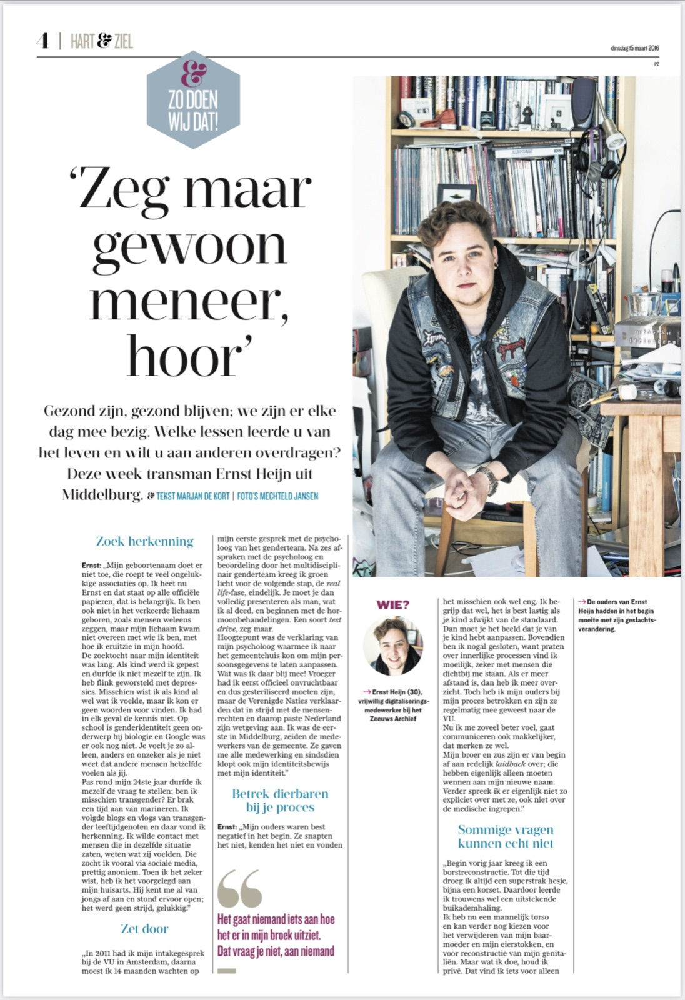
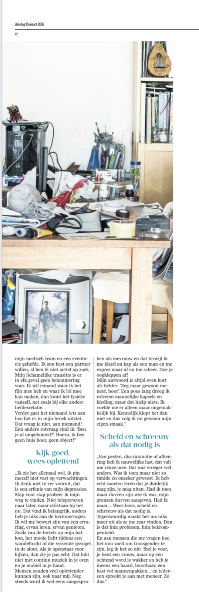

PZC 15 maart 2016 – Gezond zijn, gezond blijven, opvoeden; we zijn er elke dag mee bezig, ieder op onze eigen manier. Welke lessen leerde u van het leven en zou u aan anderen willen overdragen? Deze week transman Ernst Heijn (30) uit Middelburg.

Zoek herkenning
Ernst: “Mijn geboortenaam doet er niet toe, die roept teveel ongelukkige associaties op. Ik heet nu Ernst en dat staat op alle officiële papieren, dat is belangrijk. Ik ben ook niet in het verkeerde lichaam geboren, zoals mensen wel eens zeggen, maar mijn lichaam kwam niet overeen met wie ik ben, met hoe ik eruit zie in mijn hoofd. De zoektocht naar mijn identiteit was lang. Als kind werd ik gepest en durfde ik niet mezelf te zijn. Ik heb flink geworsteld met depressies. Misschien wist ik als kind al wel wat ik voelde, maar ik kon er geen woorden voor vinden. Ik had in elk geval de kennis niet. Op school is genderidentiteit geen onderwerp bij biologie en google was er ook nog niet. Je voelt je zo alleen, anders en onzeker als je niet weet dat andere mensen hetzelfde voelen als jij. Pas rond mijn 24ste jaar durfde ik mezelf de vraag te stellen ‘Ben ik misschien transgender?’ Er brak een tijd aan van marineren. Ik volgde blogs en vlogs van transgender leeftijdgenoten en daar vond ik herkenning. Ik wilde contact met mensen die in dezelfde situatie zaten, weten wat zij voelden. Die zocht ik vooral via sociale media, prettig anoniem. Toen ik het zeker wist, heb ik het voorgelegd aan mijn huisarts. Hij kent me al van jongs af aan en stond er voor open; het werd geen strijd gelukkig.”
Zet door
Ernst: “In 2011 had ik mijn intake bij het VU in Amsterdam, daarna moest ik 14 maanden wachten op mijn eerste gesprek met de psycholoog van het genderteam. Na zes afspraken met de psycholoog en beoordeling door het multidisciplinair genderteam kreeg ik groen licht voor de volgende stap, de ‘real life’ fase, eindelijk. Je moet je dan volledig presenteren als man, wat ik al deed, en starten met de hormoonbehandelingen. Een soort ‘testdrive’, zeg maar. Hoogtepunt van deze fase was de speciale verklaring van mijn psycholoog waarmee ik naar het gemeentehuis kon om mijn persoonsgegevens aan te laten passen. Wat was ik daar blij mee! Vroeger had ik eerst officieel onvruchtbaar en dus gesteriliseerd moeten zijn, maar de Verenigde Naties verklaarden dat in strijd met de mensenrechten en daarop paste Nederland zijn wetgeving aan (red. 1 juli 2014). Hierna was ik de eerste in Middelburg, zeiden de baliemedewerkers van de gemeente. Ze gaven me alle medewerking en sindsdien klopt ook mijn id-bewijs met mijn identiteit.”
Betrek dierbaren bij je proces
Ernst: “Mijn ouders waren best negatief in het begin. Ze snapten het niet, kenden het niet en vonden het misschien ook wel eng. Ik begrijp dat wel, het is best lastig als je kind afwijkt van de standaard norm. Dan moet je het beeld dat je van je kind hebt aanpassen. Bovendien ben ik nogal gesloten, want praten over innerlijke processen vind ik moeilijk, zeker met mensen die dichtbij me staan. Als er meer afstand is, dan heb ik meer overzicht. Toch heb ik mijn ouders bij mijn proces betrokken en zijn ze regelmatig mee geweest naar het VU. Nu ik me zoveel beter voel, gaat communiceren ook makkelijker, dat merken ze wel. Mijn broer en zus zijn er van begin af aan redelijk ‘layed back’ over; die hebben eigenlijk alleen moeten wennen aan mijn nieuwe naam. Verder spreek ik er niet zo expliciet over met ze, ook niet over de medische ingrepen. “
Sommige vragen kunnen echt niet!

Begin vorig jaar had ik een borstreconstructie, tot die tijd droeg ik altijd een super strak hesje, bijna een korset. Daardoor leerde ik trouwens wel een uitstekende buikademhaling. Ik heb nu een mannelijk torso en kan verder nog kiezen voor het verwijderen van mijn baarmoeder en mijn eierstokken, en voor reconstructie van mijn genitaliën. Maar wat ik doe houd ik privé. Dat vind ik iets voor alleen mijn medisch team en een eventuele geliefde. Ik zou best een partner willen, al ben ik niet actief op zoek. Mijn lichamelijke transitie is er in elk geval geen belemmering voor. Ik wil iemand waar ik het fijn mee heb en waar ik lol mee kan maken, dan komt het fysieke vanzelf, net zoals bij elke andere liefdesrelatie. Verder gaat het niemand iets aan hoe het er in mijn broek uit ziet. Dat vraag je niet, aan niemand! Een andere rotvraag vind ik ‘Ben je al omgebouwd?’. Hoezo, ik ben geen huis hoor, geen object!
Kijk goed, wees oplettend
Ik zie het allemaal wel, ik pin mezelf niet vast op verwachtingen. Ik denk niet te ver vooruit, dat is een erfenis van mijn depressies. Stap voor stap probeer ik mijn weg te vinden. Niet teleporteren naar later, maar stilstaan bij het nu. Dat vind ik belangrijk, anders heb je niks aan de herinneringen. Ik wil me bewust zijn van een ervaring, ervan leren, ervan genieten. Zoals van de tortels op mijn balkon, het mooie licht tijdens een wandeltocht of die vissende ijsvogel in de sloot. Als je openstaat voor kijken, dan zie je pas echt. Dat lukt niet met continu muziek in je oren en je mobiel in je hand. Mensen zouden veel oplettender kunnen zijn, ook naar mij. Nog steeds word ik wel eens aangesproken als mevrouw en dat terwijl ik me kleed en kap als een man en me expres maar af en toe scheer. Doe je oogkleppen af! Mijn antwoord is altijd even kort als helder: ‘Zeg maar gewoon meneer, hoor’. Een poos lang droeg ik extreem mannelijke kapsels en kleding, maar dat hielp niets. Ik voelde me er alleen maar ongemakkelijk bij. Kennelijk klopt het dan niet en dus volg ik nu gewoon mijn eigen smaak.
Scheld en schreeuw als dat nodig is
Van pesten, discriminatie of afkeuring heb ik nauwelijks last, dat valt me reuze mee. Dat was vroeger wel anders. Was ik toen maar niet zo timide en onzeker geweest. Ik heb echt moeten leren dat je duidelijk mag zijn, je mag uiten. Had ik toen maar durven zijn wie ik was, mijn grenzen durven aangeven. Had ik maar… Wees boos, scheld en schreeuw als dat nodig is. Tegenwoordig maakt het me niks meer uit als ze me raar vinden. Dan is dat hún probleem, hún bekrompenheid. En aan mensen die me vragen ‘Hoe voelt dat nou om transgender te zijn?’ leg ik het uit: ‘Stel je voor, je bent een vrouw, maar op een ochtend word je wakker en heb je ineens een baard, borsthaar, een kast vol mannenpakken… en iedereen spreekt je aan als meneer. Zo dus.”
Ernst Heijn (30) studeerde ‘Engelse taal en cultuur’ aan de Universiteit Leiden en ‘Illustratie’ aan het St. Joost in Breda. Omdat hij nog geen passende baan heeft kunnen vinden werkt hij ondertussen als vrijwillig digitaliseringsmedewerker bij het Zeeuws Archief. Ernst houdt van wandelen, tekenen en koken en is fan van Star Trek. Verder skypet hij vaak met zijn vrienden in Groot-Brittannië en de VS en heeft hij elke vrijdagavond een online ‘movienight’ met ze via rabb.it
Dit interview schreef ik voor de bijlage Hart & Ziel van de PZC van 15 maart 2016, met dank aan Ernst voor zijn bereidwillige medewerking en openheid.